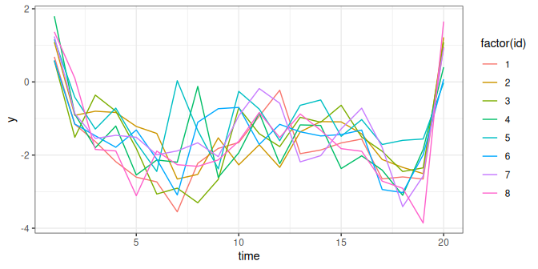

Simulating data from a dynamic multivariate panel model
Source:vignettes/dynamite_simulation.Rmd
dynamite_simulation.Rmd1 Using dynamite to generate panel data
Dynamic multivariate panel models (DMPM) are conceptually challenging due to their multichannel and multivariate nature. These models can also contain a large number of various parameters, especially when the model contains time-varying effects or group-level random effects. This poses a challenge for users that wish to generate data according to such models, as manual specification of the parameters becomes cumbersome.
While the main purpose of dynamite is to fit dynamic multivariate panel models to data and to obtain predictions, the package can fortunately also be used to generate data according to a specified model. The used need only specify the model formula, which along with data on the fixed covariates can be used the obtain the dimensions of all parameters in the model via the get_parameter_dims() function. As the name suggests, this function will return the names and dimensions of all parameters in the model which need to be specified for data simulation. However, in practice it is not necessary to define values for all parameters, as Stan will automatically generate random initial values for any missing parameters. See the documentation of as.data.frame.dynamitefit for more details on the various parameters.
After the user has specified the parameter values, they should be supplied to dynamite() as a list via the argument init, which will be used by Stan to initialize the parameters in the underlying Stan model. Furthermore, the number of iterations should be set to 1 and the simulation algorithm to "Fixed_param" so that no posterior sampling is carried out. This will result in a dynamitefit object that can be subsequently used in predict to obtain the desired simulated data.
2 Model with categorical responses
As an illustration, the approach described in this vignette was used to generate the package data categorical_example as follows. First, we define the data for the first time index:
library("dynamite")
set.seed(1)
n_id <- 100L
n_time <- 20L
d <- data.frame(
y = sample(factor(c("a", "b", "c")), size = n_id, replace = TRUE),
x = sample(factor(c("A", "B", "C")), size = n_id, replace = TRUE),
time = 1,
id = seq_len(n_id)
)Based on this initial data, our goal is to generate categorical responses for two channels, y and x, for 100 individuals over 20 time points. We expand the initial data with missing values for the remaining time points. We also add a random noise variable z that is observed for each individual at each time index.
d <- dplyr::right_join(
d,
data.frame(
time = rep(seq_len(n_time), each = n_id),
id = seq_len(n_id)
),
by = c("time", "id")
)
d$z <- rnorm(nrow(d))Next, we define the model formula for the DMPM of the response variables.
f <- obs(x ~ z + lag(x) + lag(y), family = "categorical") +
obs(y ~ z + lag(x) + lag(y), family = "categorical")Based on this formula, we now need to define the values of the parameters of the model that it implies. First, we must determine what the parameters are called and what their dimensions are via get_parameter_dims().
For dynamiteformula objects, this method should be provided the same arguments as dynamite: the model formula, the data, the time index variable and the optional grouping variable. This function fits a temporary Stan model to define the required parameters, meaning that it may take a few seconds to obtain the result.
get_parameter_dims(x = f, data = d, time = "time", group = "id")#> $beta_x_B
#> [1] 5
#>
#> $a_x_B
#> [1] 1
#>
#> $beta_x_C
#> [1] 5
#>
#> $a_x_C
#> [1] 1
#>
#> $beta_y_b
#> [1] 5
#>
#> $a_y_b
#> [1] 1
#>
#> $beta_y_c
#> [1] 5
#>
#> $a_y_c
#> [1] 1In other words, all beta parameters are vectors of length 5, and the a parameters are scalars. The a type parameters are centered versions of the intercepts alpha at the first time index (see the package vignette on default priors for more information: vignette("dynamite_priors", package = "dynamite")). Now we have the required information to specify the values for the parameters of the model. The actual values to be chosen naturally depends on the scenario and is up to the user. We set the following values for the simulation as the list init.
init <- list(
beta_x_B = c(2, 0.8, 0.2, 0, 0),
a_x_B = -0.1,
beta_x_C = c(1, 0.5, 2, 0.2, 0.1),
a_x_C = 0.2,
beta_y_b = c(0, 1, 0.8, 0.3, 0.5),
a_y_b = 0.1,
beta_y_c = c(1, 0.2, 0, 0.3, -0.5),
a_y_c = -0.5
)We fit the model with these fixed values. Note that we wrap our init object in another list, because the init argument is chain specific, and thus the first element provides initial values to the first (and in this case only) chain.
fit <- dynamite(
dformula = f,
data = d,
time = "time",
group = "id",
chains = 1,
iter = 1,
algorithm = "Fixed_param",
init = list(init),
)The categorical_example data of the package can now be obtained with a simple call to predict(). Finally, we simply rename the simulated values of the responses, and select the variables of interest.
3 Model with time-varying effects
As mentioned earlier, simulation from a model with time-varying effects is more challenging due to the inclusion of p-splines which means that we must also define initial values for the spline coefficients. We consider a single-channel model with a gaussian response that has a time-varying effect of a single covariate.
library("dynamite")
set.seed(1)
n_id <- 8L
n_time <- 20L
d <- data.frame(
y = rnorm(n_id, 1, 0.5),
time = 1,
id = seq_len(n_id)
)We again expand the data with missing values to the full time period and add a fixed covariate x.
d <- dplyr::right_join(
d,
data.frame(
time = rep(seq_len(n_time), each = n_id),
id = seq_len(n_id)
),
by = c("time", "id")
)
d$x <- rnorm(nrow(d))Next, we define the model formula for the response variable y of the DMPM and define the splines of the time-varying effects.
Again, we apply the get_parameter_dims() function to get the model parameters and their dimensions.
get_parameter_dims(x = f, data = d, time = "time", group = "id")Here, omega_y defines the spline coefficients for the time-varying effects. This parameter is a 2 by 10 matrix because we have 2 time-varying effects, x and lag(y), and the degrees of freedom of the splines is 10. The parameter tau_y defines the standard deviations of the random walk priors for the two time-varying effects. We choose the following values for the model parameters:
init <- list(
omega_y = rbind(
c(0.0, 0.2, -0.8, 1.0, 0.5, 0.0, 0.1, -0.2, -0.5, 0.1),
c(0.3, -0.4, 0.7, 0.5, 0.0, 0.0, 0.0, 0.6, 0.9, -0.8)
),
tau_y = c(1.0, 0.75),
a_y = -1,
sigma_y = 0.5
)We fit the model with these fixed values.
gaussian_simulation_fit <- dynamite(
dformula = f,
data = d,
time = "time",
group = "id",
chains = 1,
iter = 1,
algorithm = "Fixed_param",
refresh = 0,
init = list(init),
)Finally, we generate the data using predict().
sim <- predict(gaussian_simulation_fit, type = "response") |>
dplyr::mutate(y = y_new) |>
dplyr::select(id, time, x, y)We can plot individual trajectories of y over time to visualize the data.
library("ggplot2")
sim |>
dplyr::filter(id < 9) |>
ggplot(aes(time, y, color = factor(id))) +
geom_line() +
theme_bw()